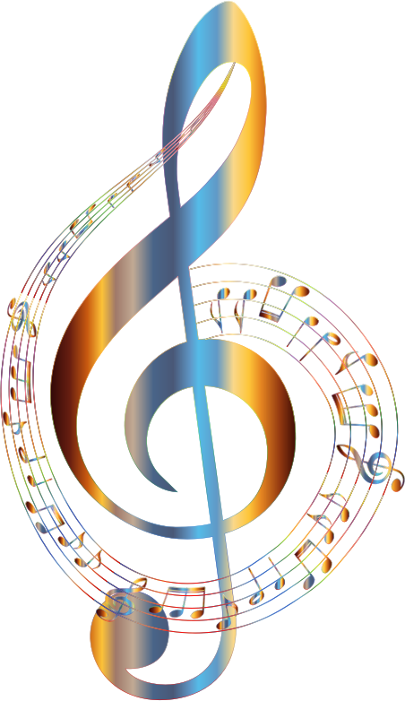

Different Types Of Instrument Families
Why Do People Enjoy Playing Musical Instruments?
Musical instruments go back as 40,000 years ago, when the first flute was invented. In today’s world, musical instruments are heard almost everywhere. Millions of people own and practice an instrument every day, and many simply just adore music. Many adore these instrumental objects, each used for various reasons. In reality, any object that produces any sort of sound or vibration can be considered as a musical instrument! That also includes clapping, snapping, tapping, and singing. On this webpage, you will read and learn about the different instruments and their families, why people enjoy playing them, and so much more.
Here are some examples of different types of instrument families, provided with a Wikipedia link on the specific instrument to find out more information if interested. An instrument is classified into a "family", based on the way that it sounds and the way it produces vibration. There are 4 different big instrument families: woodwind, string, brass, and percussion. Many of these instruments in the same family may be slightly modified for each instrument (example: First Violin, Second Violin, viola, etc). Every instrument sounds different and has its own unique sound to it. Only the most common and popular instruments will be mentioned, as there are hundreds of instruments in the world.

If you're question how relaxation can be a big part of musical instruments, you’ll soon know how. To alter a person’s mood, people may enjoy playing musical instruments as a form of relaxation, to either amuse themselves or others. Why, must you ask? The relaxing, soothing sound of an instrument may bring happiness to your ears, reducing levels of pain, anxiety, stress or anger. The sound of a nice violin is just so soothing, with very gently played gentle chords and notes. Who doesn’t love the sound of music to wind down their day and talk about happiness?
People may entertain other individuals to give them satisfaction, to just hear them play may brighten up their day. The entertainment industry is open for a wide range of musicians, for the ones who want to play music to please others. The world needs more creative and amazing musicians. Musical instruments are also a great way to express how you are feeling, as there are many different genres of music in the world, and they all possess different feelings and emotions that an individual may perform on an instrument. Sometimes, when you’re at your lowest, music can cheer you up. It motivates you to push through it and keep on going.
Several studies all around the world have proven that music instrument knowledge improves your academic skills. It develops self-discipline and a positive mindset to the person partaking in music studies. Focusing on a musical instrument as an extra-curricular activity can open a door to so many new opportunities. If you are a parent looking into getting your child into musical studies, definitely go for it. It is such a fun experience to learn a whole new academic concept apart from schoolwork. If you are a student in music, you can perhaps join a music ensemble in or outside of school, play at your school talent show, can lead to a career, and may even focus your post-secondary education in this industry. Knowledge in music can develop your brain to its fullest potential, learning elements in your life that you’ve never known before.
Musical instruments have had a big impact on the world today, as many people enjoy these products as forms of satisfaction. Furthermore, people may also choose to pursue music as a career. Not only do people love musical instruments, but also they adore all the different uses people make out of them. Musical instruments are highly beneficial in so many countless ways. The amount of ways people use these instruments to please others; is just outstanding.
